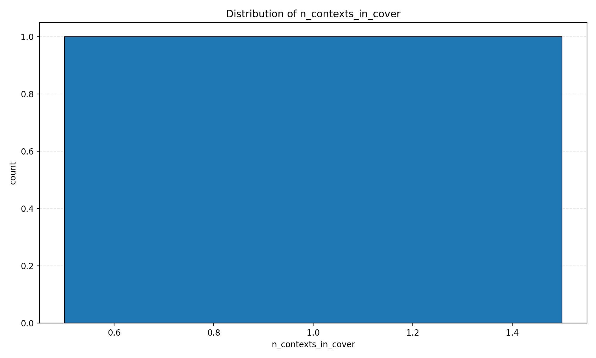
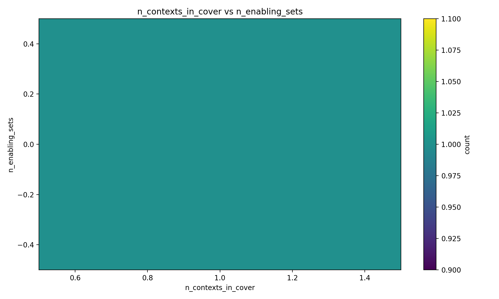
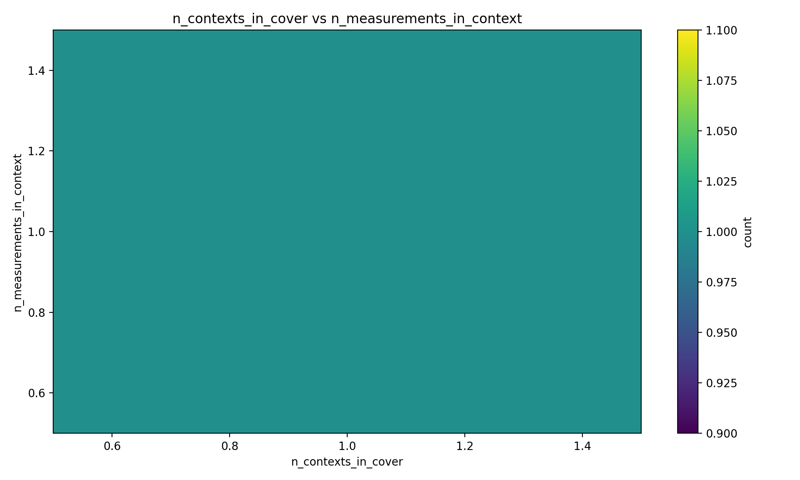
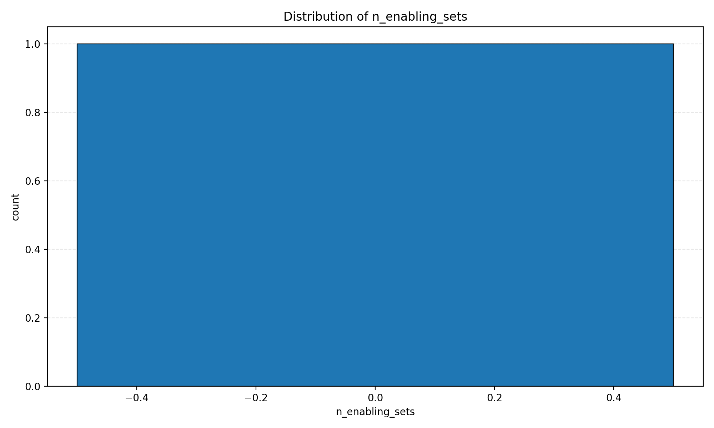
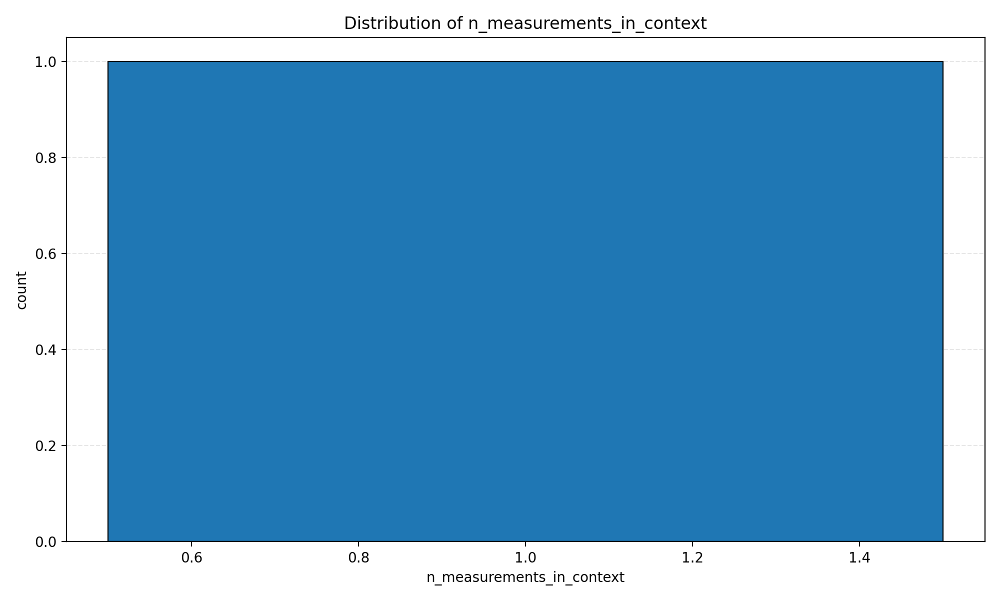
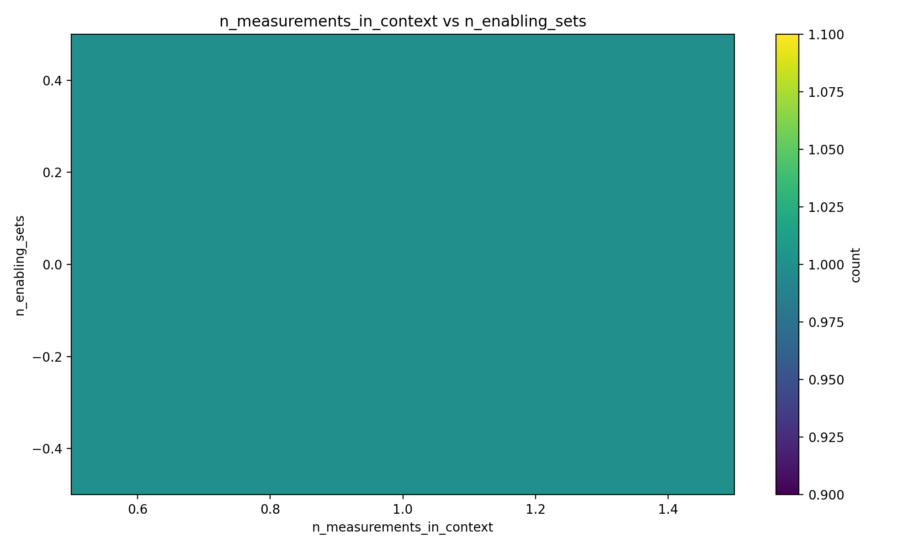
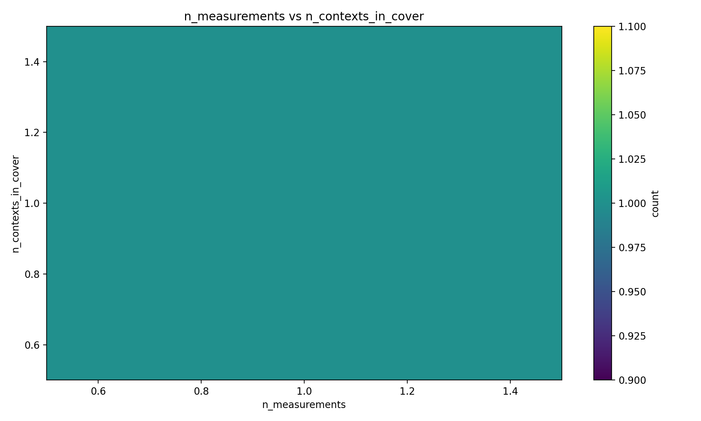

Histograms

n_contexts_in_cover

n_contexts_in_cover_vs_n_enabling_sets

n_contexts_in_cover_vs_n_measurements_in_context

n_enabling_sets
n_measurements

n_measurements_in_context

n_measurements_in_context_vs_n_enabling_sets

n_measurements_vs_n_contexts_in_cover
n_measurements_vs_n_enabling_sets
n_measurements_vs_n_measurements_in_context